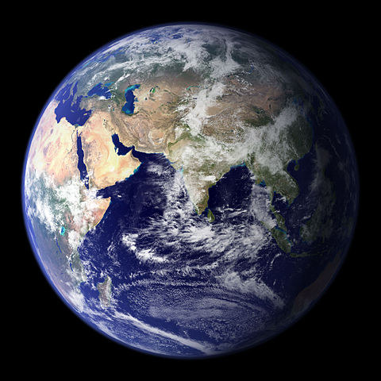
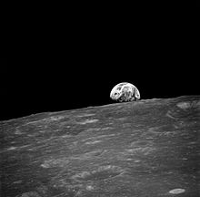

La Terra e' il terzo pianeta in ordine di distanza dal Sole e il più grande dei pianeti terrestri del Sistema solare, sia per massa sia per diametro.

Sulla sua superficie, si trova acqua in tutti e tre gli stati (solido, liquido e gassoso) e un'atmosfera composta in prevalenza da azoto e ossigeno che, insieme al campo magnetico che avvolge il pianeta, protegge la Terra dai raggi cosmici e dalle radiazioni solari.
L'asse di rotazione terrestre è inclinato rispetto alla perpendicolare al piano dell'eclittica: questa inclinazione combinata con la rivoluzione della Terra intorno al Sole causa l'alternarsi delle stagioni.
La sua formazione è datata a circa 4,54 miliardi di anni fa. La Terra possiede un satellite naturale chiamata Luna la cui età, stimata analizzando alcuni campioni delle rocce più antiche, è risultata compresa tra 4,29 e 4,56 miliardi di anni.

La Terra fotografata dalla Luna
21 Luglio 1969: il primo uomo sulla Luna
Le condizioni atmosferiche primordiali sono state alterate in maniera preponderante dalla presenza di forme di vita che hanno creato un diverso equilibrio ecologico plasmando la superficie del pianeta. Circa il 71% della superficie è coperta da oceani di acqua salata e il restante 29% è rappresentato dai continenti e dalle isole.
La superficie esterna è suddivisa in diversi segmenti rigidi detti placche tettoniche che si spostano lungo la superficie in periodi di diversi milioni di anni. La parte interna, attiva dal punto di vista geologico, è composta da uno spesso strato relativamente solido o plastico, denominato mantello, e da un nucleo diviso a sua volta in nucleo esterno, dove si genera il campo magnetico, e nucleo interno solido, costituito principalmente da ferro e nichel. Tutto ciò che riguarda la composizione della parte interna della Terra resta comunque una teoria indiretta ovvero mancante di verifica e osservazione diretta.